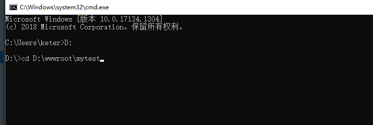
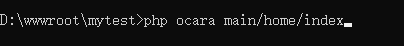
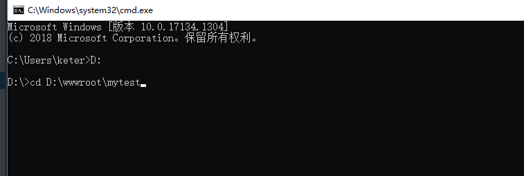
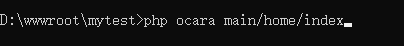

1.12 PHP命令执行
1、PHP命令执行 PHP命令执行，是在cli模式下执行PHP文件。 本框架生成的应用项目目录下有一个Ocara文件，便是命令执行脚本主文件。 执行步骤：
（1）编写控制器动作
命令控制器需要在application/console添加模块，在开发者中心模块添加时选择命令模块（console），参见2.2_添加模块。
（2）执行命令
（a）切换到网站根目录

（b）执行命令

2、传递参数
如果要传递参数，可以在路由后面加上，以斜杠“/”分隔。
（1）可与路由参数连在一起：main/home/index/id/1
（2）可与路由参数分开：main/home/index id/1
3、修改参数传递方式
可以在参数后面加上post更新参数传递方式为POST。
执行步骤：
（1）编写控制器动作
命令控制器需要在application/console添加模块，在开发者中心模块添加时选择命令模块（console），参见2.2_添加模块。
（2）执行命令
（a）切换到网站根目录

（b）执行命令

2、传递参数
如果要传递参数，可以在路由后面加上，以斜杠“/”分隔。
（1）可与路由参数连在一起：main/home/index/id/1
（2）可与路由参数分开：main/home/index id/1
3、修改参数传递方式
可以在参数后面加上post更新参数传递方式为POST。
php ocara main/home/refreshCache type/user post